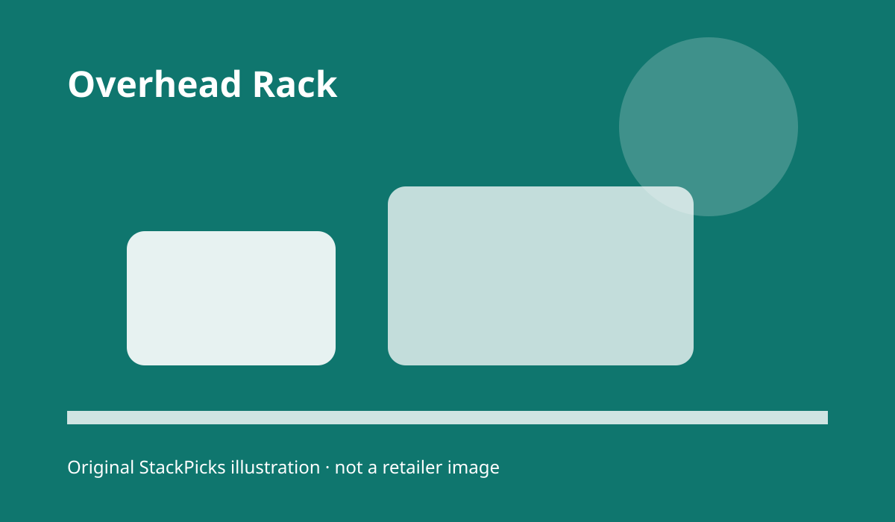
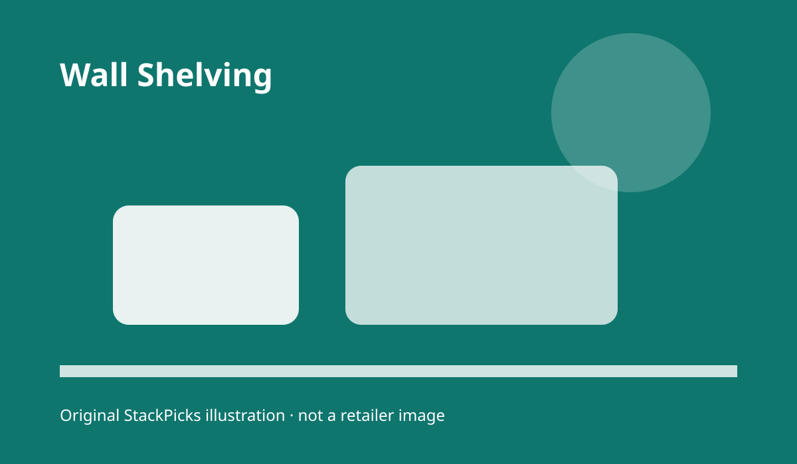
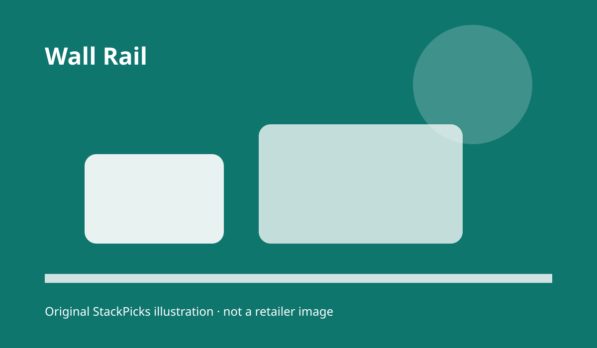
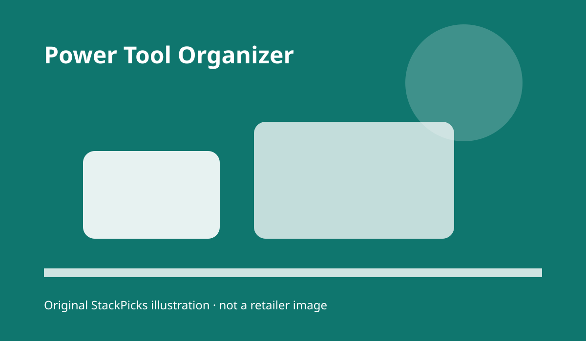

Garage and workshop organization · 2026 guide
A garage layout that puts heavy, awkward storage where it belongs.
The right garage organizer is not the one with the longest feature list. It is the one that fits your ceiling, wall structure, tool habits, and actual load. This guide starts with the highest-friction decisions—overhead clearance, shelf depth, mounting, and access—before you buy.
How to shop
Check this before treating a listing as a fit.
Check this before treating a listing as a fit.
Check this before treating a listing as a fit.
Check this before treating a listing as a fit.
Check this before treating a listing as a fit.
Our shortlist
The picks, by buyer type
There is no universal winner. The best first choice depends on the constraint you are solving. Every link below goes to Amazon; price, availability, ratings, and seller information are intentionally left to the live listing rather than typed here.

overhead rack
FLEXIMOUNTS 4x8 overhead garage ceiling rack
Best for reclaiming ceiling volume
Why it belongs: A large overhead platform can turn unused ceiling space into a labeled storage zone.
Choose it when
A large overhead platform can turn unused ceiling space into a labeled storage zone.
A large overhead platform can turn unused ceiling space into a labeled storage zone.
Watch the limit
Measure joist direction, vehicle clearance, and access before choosing a large rack.
Measure joist direction, vehicle clearance, and access before choosing a large rack.
Current price and availability: check the live Amazon listing.
Check price at Amazon(paid link) · price and availability change; verify on Amazon
wire shelving
Amazon Basics 4-shelf steel wire storage shelves
Best for a flexible floor-standing zone
Why it belongs: Open wire shelves make frequently used bins visible and adjustable.
Choose it when
Open wire shelves make frequently used bins visible and adjustable.
Open wire shelves make frequently used bins visible and adjustable.
Watch the limit
A floor unit consumes footprint that may be needed for vehicle doors or work benches.
A floor unit consumes footprint that may be needed for vehicle doors or work benches.
Current price and availability: check the live Amazon listing.
Check price at Amazon(paid link) · price and availability change; verify on Amazon

wall shelving
FLEXIMOUNTS 2-pack garage wall shelving
Best for spreading storage across a wall
Why it belongs: Two wall shelves can divide seasonal bins from daily tools.
Choose it when
Two wall shelves can divide seasonal bins from daily tools.
Two wall shelves can divide seasonal bins from daily tools.
Watch the limit
Wall structure and fastener compatibility matter more than shelf count.
Wall structure and fastener compatibility matter more than shelf count.
Current price and availability: check the live Amazon listing.
Check price at Amazon(paid link) · price and availability change; verify on Amazon

wall rail
Rubbermaid FastTrack wall mounted rail system
Best for a modular wall starter
Why it belongs: A rail-based system supports a changeable wall instead of a fixed pegboard layout.
Choose it when
A rail-based system supports a changeable wall instead of a fixed pegboard layout.
A rail-based system supports a changeable wall instead of a fixed pegboard layout.
Watch the limit
Accessory compatibility should be checked before expanding the system.
Accessory compatibility should be checked before expanding the system.
Current price and availability: check the live Amazon listing.
Check price at Amazon(paid link) · price and availability change; verify on Amazon

power tool organizer
POKIPO power tool organizer with charging station
Best for keeping cordless tools visible
Why it belongs: A dedicated charging area can reduce bench clutter and battery hunting.
Choose it when
A dedicated charging area can reduce bench clutter and battery hunting.
A dedicated charging area can reduce bench clutter and battery hunting.
Watch the limit
Confirm tool dimensions and outlet placement before mounting.
Confirm tool dimensions and outlet placement before mounting.
Current price and availability: check the live Amazon listing.
Check price at Amazon(paid link) · price and availability change; verify on Amazon
Quick comparison
| Buyer type | Pick | Decision check | Live price |
|---|---|---|---|
| Best for reclaiming ceiling volume | FLEXIMOUNTS 4x8 overhead garage ceiling rack | Product fit, dimensions, and live availability | Check price at Amazon |
| Best for a flexible floor-standing zone | Amazon Basics 4-shelf steel wire storage shelves | Product fit, dimensions, and live availability | Check price at Amazon |
| Best for spreading storage across a wall | FLEXIMOUNTS 2-pack garage wall shelving | Product fit, dimensions, and live availability | Check price at Amazon |
| Best for a modular wall starter | Rubbermaid FastTrack wall mounted rail system | Product fit, dimensions, and live availability | Check price at Amazon |
| Best for keeping cordless tools visible | POKIPO power tool organizer with charging station | Product fit, dimensions, and live availability | Check price at Amazon |
How we picked
We compared the shortlist by the physical decisions that cause garage systems to fail: where the load transfers, whether a car door can still open, whether daily tools stay within reach, and whether the first unit creates a coherent zone. We did not hands-on test these products; we use only the supplied dated listing evidence and manufacturer/listing details that a buyer should recheck before ordering.
Our method is source-based, not hands-on testing. The product set came from the dated research brief; recheck the live listing before purchase. We do not hand-type Amazon prices, ratings, review counts, or availability.
FAQ
Should heavy bins go overhead?
Only when the rack, ceiling structure, fasteners, and access plan support them. Keep frequently handled or very heavy items at a safer reachable height.
How do I choose between wall and floor storage?
Use walls when floor clearance matters; use floor shelving when you need adjustable access without drilling into wall structure.
What should I measure first?
Measure ceiling height, joist direction, wall width, vehicle-door swing, and the largest bin you intend to store.
Is a larger rack always better?
No. A rack that blocks lighting, doors, or maintenance access creates a new problem. Match capacity to the zone.
Are these products hands-on tested?
No. This is source-based decision support, not a claim of personal testing or load certification.
Also considered
We excluded generic category roundups, products without a clear role in the workflow, and any listing fact that could not be rechecked. We would rather narrow the set than fill a comparison table with invented certainty.
Sources: Amazon best-seller research captured September 11, 2026; Amazon live listing links above; Amazon Associates disclosure and link rules. Research boundary: no hands-on product testing.